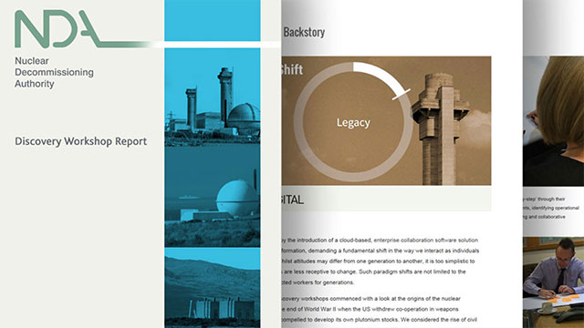
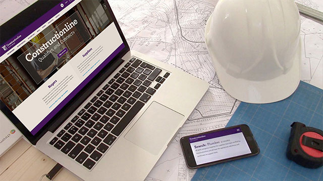
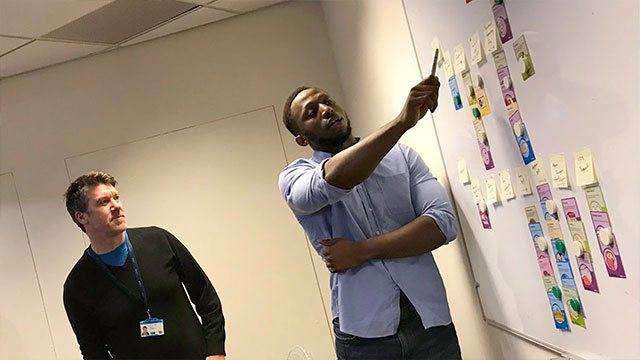
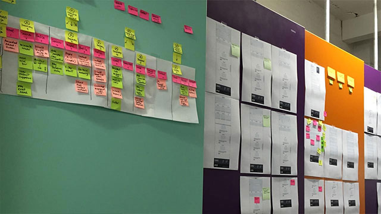
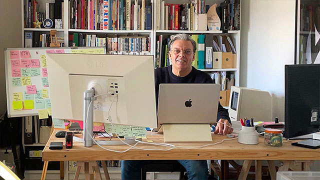
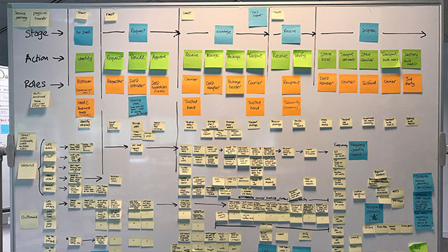
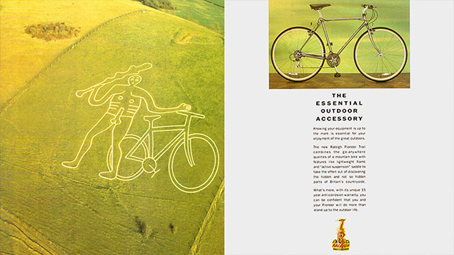
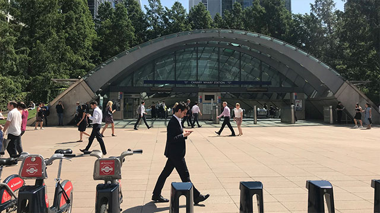
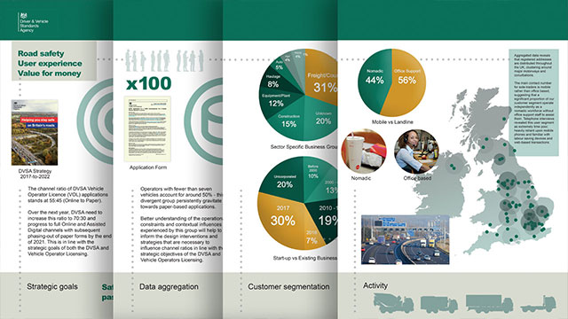

People
Paul Fillingham - Digital Producer
UX Research, Platform Design, Creative Direction
Award-winning digital producer with experience across government services, ecommerce, arts and heritage. Working at the leading edge of every significant shift in digital practice — not as an observer but as an early adopter and practitioner in each successive wave. The consistent skill across every project being platform thinking with special consideration for content, architecture and accessibility.
My design methodology is very simple. View the landscape, shape the stories, build the platform and share with others.









Research and Design Experience
Working with UK Government digital service development teams. Including; HM Revenue and Customs, Driver and Vehicle Licensing Agency, Department for Education, Nuclear Decommissioning Authority, Constructionline and the National Resilience Extranet.
A Government Digital Service (GDS) practitioner and assessor, applying user-centred design methods across some of the UK's most important digital services.
HMRC Peoples Award finalist (2021), ResCon Research Excellence nomination (2024), and a Digital Branding Gold Award for Harneys Europe and Asia sit alongside this work.
Paul has moved through every wave of digital transformation, desktop publishing in the agency years, ecommerce when that was a new idea, digital arts and heritage platforms in 2010, and Generative AI since 2019.
At Headland Multimedia, took a DIY retailer from no web presence to £6.4 million annual online turnover.
Founded Thinkamigo Ltd in 2012 developing Arts and heritage projects alongside commercial work, including digital production for the BBC and Arts Council England's experimental on-demand digital arts platform; The Space.
Co-produced The Guardian award-winning digital comic Dawn of the Unread with Literary Editor James Walker. A storytelling platform which formed the basis of ongoing education projects with Nottingham Trent University and helped secure Nottingham's status as a UNESCO City of Literature.
Co-founder of Mine2Minds, a Community Interest Company (CIC), with mining historian David Amos. Engaged in digital research and design collaborations with Nottingham Trent University. Co-curated Coal, Community and Change A touring exhibition that reached over 70,000 visitors. BBC appearances across television and national radio.
Currently developing an AI-assisted production pipeline for Houdini Window, a cold war science fiction thriller and first novel with working process being shared in the Design Intelligence Substack.
For commercial enquiries, availability and full resumé
Contact Paul Fillingham